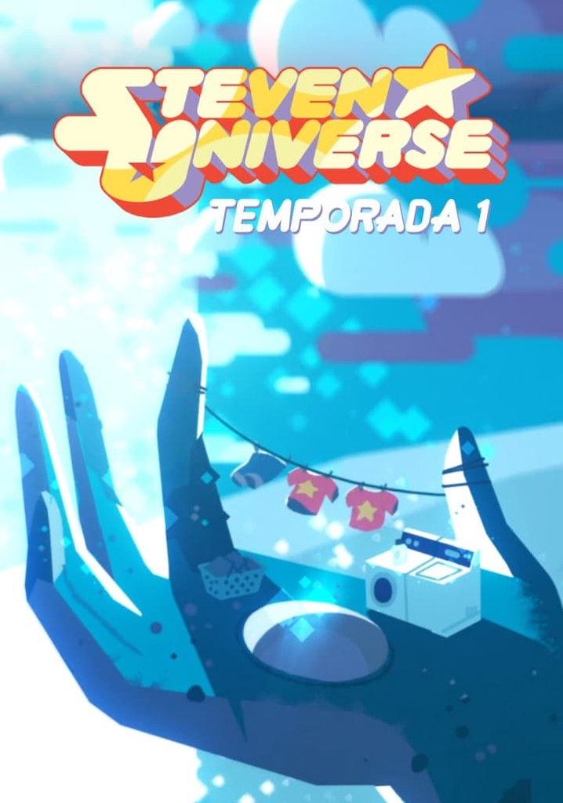
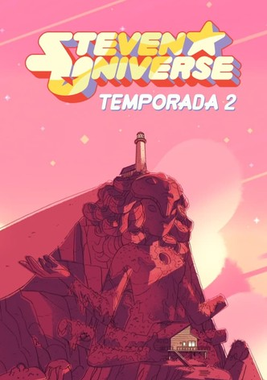
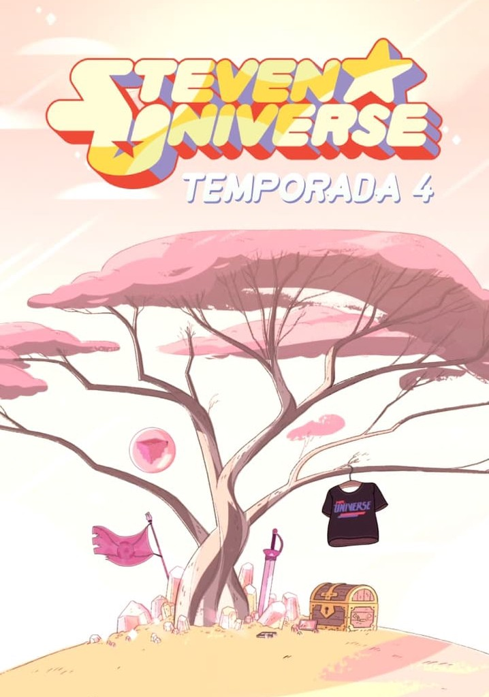

Temporada 1

Esta temporada se estrenó el lunes 4 de noviembre del 2013, con dos episodios consecutivos, el primer episodio, fue "Brillo de Gema" seguido por "El Cañón Láser", y terminó el 12 de marzo del 2015 con un especial de dos partes.
En América Latina, se estrenó el 7 de abril del 2014, "El Cañón Láser", mientras que se estrenan los episodios desordenados.
La temporada 1 dejó de estrenar episodios hasta el 14 de mayo del 2014 con el episodio "El Cuarto de Rose" y empezó de nuevo el 21 de agosto del 2014 conjunto a la Temporada 1B, que se estrenó el 4 de octubre del 2014, "Un Invitado en la Casa". El Panel de Steven Universe Comic-Con confirmó que esta temporada constaría con la suma total de 52 episodios aproximadamente y más una Segunda Temporada.
Temporada 2

Esta temporada se estrenó el viernes 13 de marzo del 2015, el primer episodio es "La Confesión". Esta temporada tiene 26 episodios. La segunda temporada terminó con "Bitácora 7 15 2".
6ew El 02 de abril del 2015, se estreno el primer episodio Crossover con Tío Grandpa, pero fue confirmado que no es canónico, lo que significa que no es parte de la historia, ese crossover se realizo durante la primera temporada. La Temporada 2 dejó de estrenar episodios hasta el 30 de abril del 2015 con el episodio Regenerada y empieza a estrenar más episodios después de dos semanas, con el StevenBomb 2, luego ocurrió lo mismo, volviendo a estrenar episodios el 13 de Julio del 2015 con el StevenBomb 3 y la aparición de Sardonyx. El 4 de Enero de 2016, estrenó su StevenBomb 4 con episodios muy reveladores.
Temporada 3

Esta temporada se estrenó el 12 de mayo del 2016 con el especial In Too Deep. Esta temporada cuenta con 25 episodios. Esta temporada comienza con "La Isla Sandía" y termina con "En la Burbuja".
Originalmente, esta temporada sería la "Temporada 2B", por lo cual, tanto la Primera Temporada como la Segunda Temporada tendrían el episodio final en el espacio exterior (véase, "Escape de la Prisión" y "En la Burbuja"). Como "Bismuto" es un episodio con duración de 22 minutos, ocupa dos episodios. El 18 de julio, empezó el especial Steven's Summer Adventures, acabando esta temporada
Temporada 4

Esta temporada cuenta con 25 episodios. Esta temporada comienza con "El niño de la Guardería" y termina con "Yo Soy Mi Mamá". En esta temporada se estrenará el especial "Fuera de este Mundo"; el cual, es un especial similar al StevenBomb, sólo que termina en jueves y estrena dos episodios el lunes. El especial abarca desde el capítulo "Los Sueños de Steven" hasta el capítulo "Eso es Todo". En este especial se supo más sobre las Diamantes y también se reveló que Diamante Rosado tenía un zoológico de humanos.
Esta temporada finaliza con el StevenBomb 6, el cual abarca desde el capítulo "León 4: Final Alterno" hasta el capítulo "Yo Soy Mi Mamá". En dicho especial, debutan las Gemas Aguamarina y Topacio. También, el especial acaba con Steven y Lars yendo al Planeta Madre en la nave de Aguamarina.
Curso de Diseño y DesarrolloWec>
Copyright (c): ISIL 2024
Desarrollado por: Jazmin Reinoso Rojas